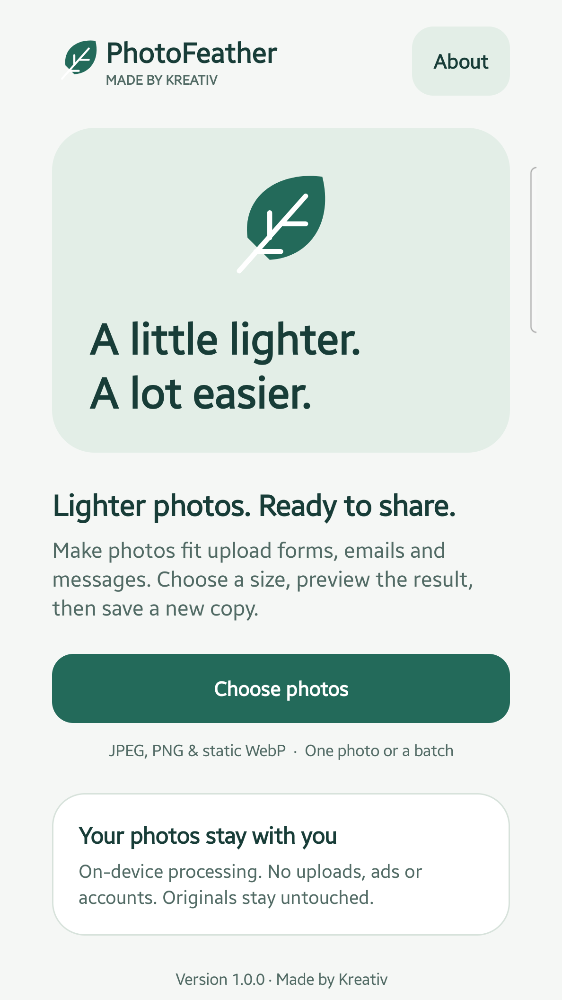
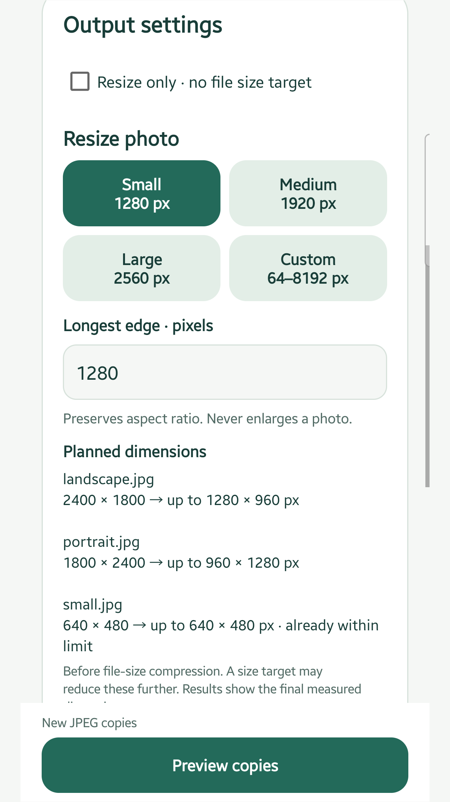
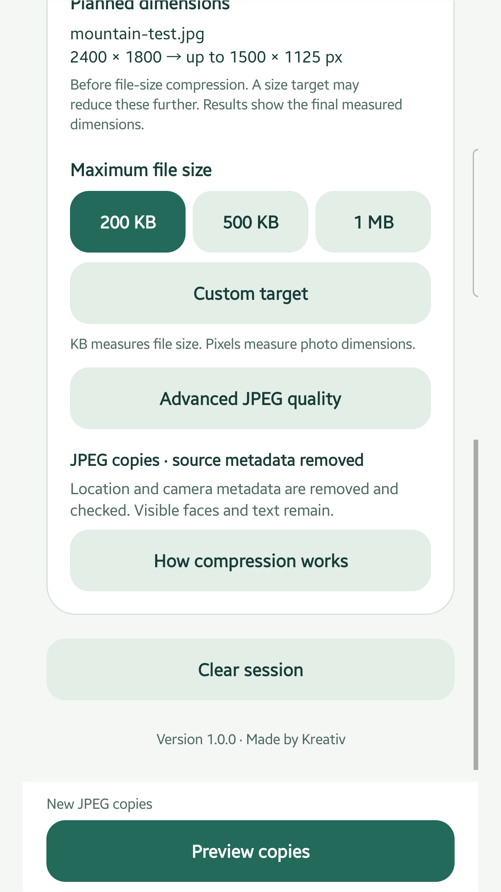
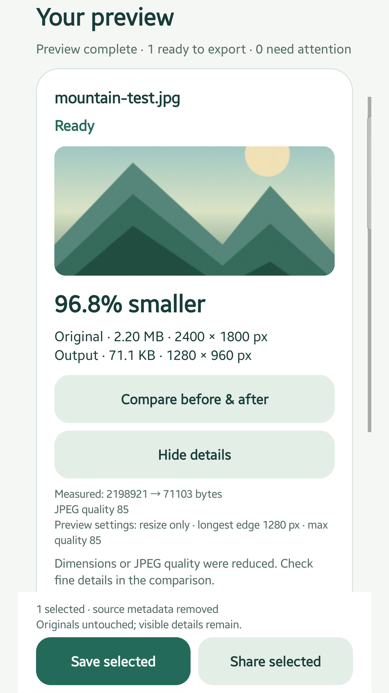
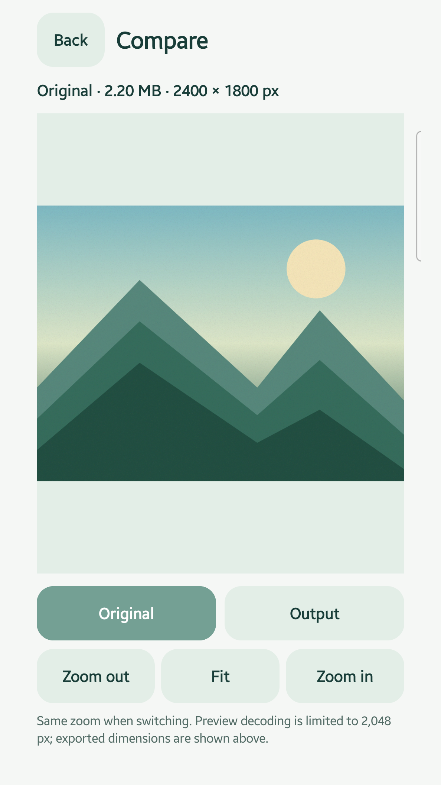

PhotoFeather helps make photos smaller for upload forms, email and messaging. This Android app processes images on your device, keeps your originals and creates new JPEG copies. It has no account, ads, purchases or subscriptions in version 1.0.0.
Get PhotoFeather on Google Play
This guide uses the screenshots currently published on the developer’s Google Play listing, checked on 25 October 2026. The illustrated mountain is a demo image; results vary.
1. Choose your photos
Open PhotoFeather and tap Choose photos. Select one image or a batch in Android’s system picker. Supported inputs are JPEG, PNG and static WebP. HEIC/HEIF, AVIF, GIF and animated images are not supported. A cloud provider selected in the system picker may retrieve a photo; PhotoFeather processes the selected image on your device.

2. Decide how large the image should be
In Output settings, choose Small (1280 px), Medium (1920 px), Large (2560 px) or a custom longest edge from 64 to 8192 pixels. These are pixel dimensions, not file sizes. The app preserves aspect ratio and never enlarges smaller photos. Check the planned width and height. For dimensions without a file-size target, select Resize only · no file size target.

3. Set a maximum file size, if needed
For a form or attachment limit, choose 200 KB, 500 KB, 1 MB or Custom target. KB and MB measure the file size; pixels measure image dimensions. The app uses decimal units: 1 KB is 1000 bytes and 1 MB is 1000000 bytes. Tap Preview copies. Meeting a target can require lower JPEG quality or smaller dimensions. If a target cannot be met, the app explains it and does not offer that unsuccessful result for export.

4. Check the measured result
In Your preview, compare the original and output sizes, the final dimensions and the percentage saved. The screenshot below shows one illustrated demo image; it is not a typical-savings promise. Savings depend on the input and settings. Planned dimensions can change further to meet a target or fit memory limits. Review any items needing attention. Larger or same-sized outputs require your explicit choice before export.

5. Compare, then save or share a new copy
Tap Compare before & after, switch between Original and Output, and zoom or pan to inspect details. JPEG output is lossy, so check text, faces and other details that matter to you. Return to results, select successful copies and use Save selected or Share selected. PhotoFeather creates new JPEG files; it never overwrites or deletes originals. Transparent PNG and WebP inputs require an opaque background for JPEG output. The screenshots show the app UI, not Android’s native save or share dialogs.

What about metadata and privacy?
Source metadata, including embedded location metadata, is removed from newly encoded JPEG copies and checked before export, according to the published release description. Visible faces, text and other sensitive details remain. Metadata removal does not anonymise a photo. PhotoFeather has no internet permission or advertising/analytics SDKs according to its listing. User-initiated sharing follows the receiving app’s policies.
Why did my photo become smaller in pixels?
A file-size target may need lower resolution as well as lower JPEG quality. Large inputs may also be reduced to fit memory limits. Check the final dimensions and comparison before saving. This is not lossless compression, and no app can promise identical visible quality for every JPEG conversion.
Can I use dark mode?
Yes. PhotoFeather supports dark mode, large text and labelled accessibility controls.